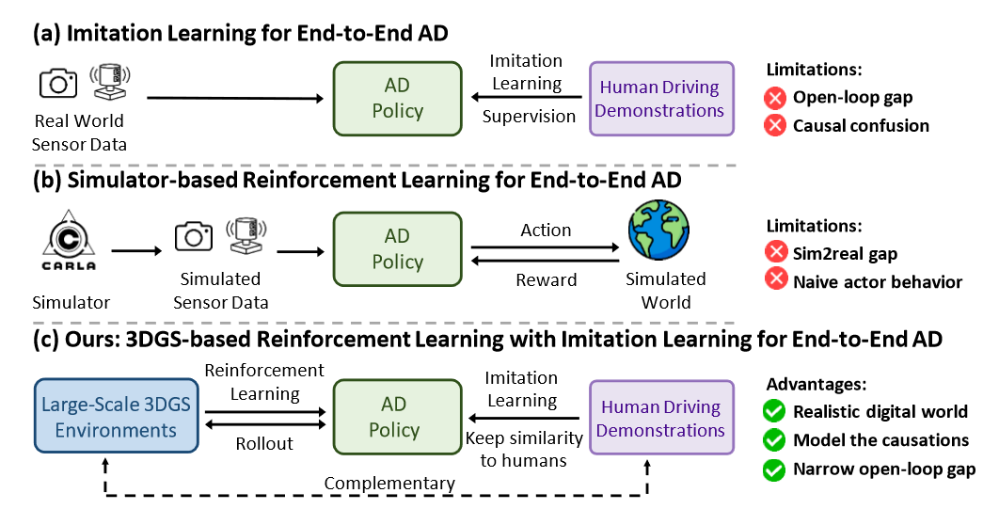
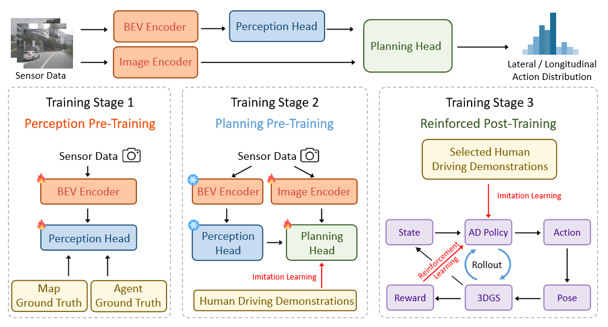
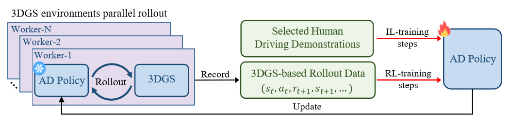
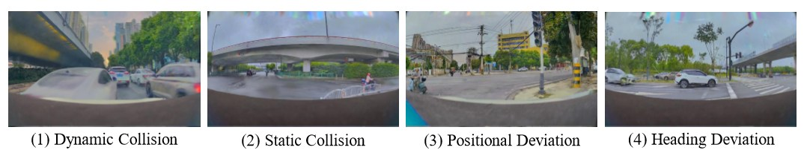
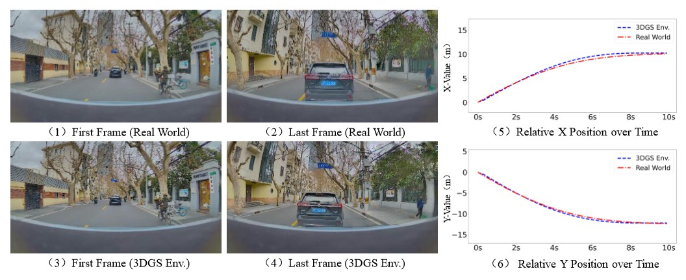
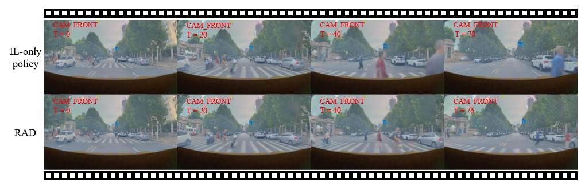
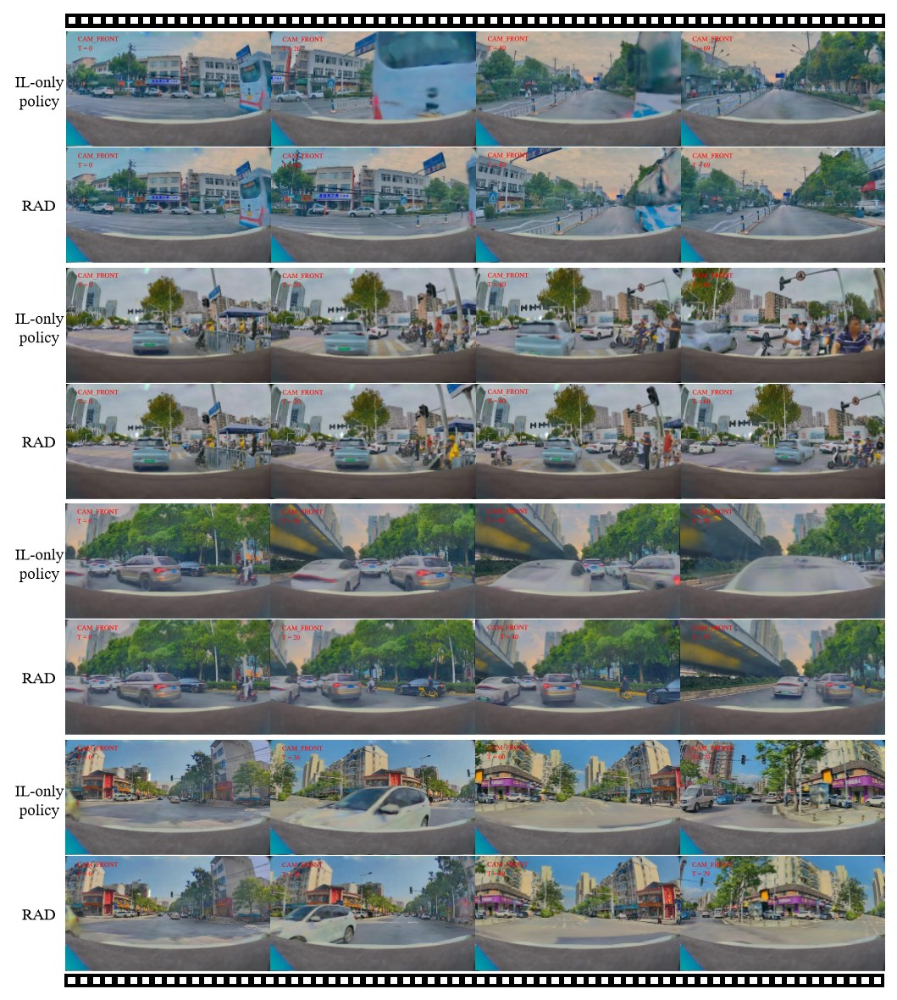

目次
RAD: Training an End-to-End Driving Policy via Large-Scale 3DGS-based Reinforcement Learning
Hao Gao1,◇、Shaoyu Chen1,2,†、Bo Jiang1、Bencheng Liao1、Yiang Shi1、Xiaoyang Guo2、Yuechuan Pu2、Haoran Yin2、Xiangyu Li2、Xinbang Zhang2、Ying Zhang2、Wenyu Liu1、Qian Zhang2、Xinggang Wang1,✉
1 Huazhong University of Science & Technology 2 Horizon Robotics
arXiv:2502.13144v2 [cs.CV]、2025年10月21日。第39回 Conference on Neural Information Processing Systems（NeurIPS 2025）
翻訳について：原文 PDF は
35_RAD_2502.13144.pdf（全 19 ページ）。本文、図の説明、図中ラベル、表、脚注、付録を訳出し、論文タイトルと参考文献は原文のまま掲載。図は原図を掲載し、英語ラベルの日本語訳を併記した。数式・数値・引用番号・コードの識別子は原文を維持。原文の記述に関する補足は「訳注」と明示し、本文と区別している。
要旨
既存のエンドツーエンド自動運転（AD）アルゴリズムは一般に模倣学習（IL）のパラダイムに従っており、因果混同（causal confusion）やオープンループギャップといった課題を抱えている。本研究では、エンドツーエンド自動運転（Autonomous Driving）のための 3DGS ベースの閉ループ強化学習（Reinforcement Learning、RL）フレームワーク RAD を提案する。3DGS 技術を活用して現実の物理世界の写実的なデジタルレプリカを構築し、AD 方策が状態空間を広範に探索し、大規模な試行錯誤を通じて分布外のシナリオへの対処を学習できるようにする。安全性を高めるため、安全上重大な事象に方策が効果的に対応し、現実世界の因果関係を理解するよう導く専用の報酬を設計する。人間の運転行動とよりよく整合させるため、IL を正則化項として RL の訓練に組み込む。多様で未見の 3DGS 環境からなる閉ループ評価ベンチマークを導入する。IL ベースの手法と比較して、RAD はほとんどの閉ループ指標でより高い性能を達成し、特に衝突率が 3 分の 1（3× 低い）となった。豊富な閉ループの結果を補足資料で示す。今後の研究を促進するため、コードを https://github.com/hustvl/RAD で公開している。
脚注◇：本研究は、Hao Gao（
g_hao@hust.edu.cn）が Horizon Robotics のインターンであった期間に行われた。
脚注†：プロジェクトリーダー（shaoyu.chen@horizon.auto）。✉ 責任著者（xgwang@hust.edu.cn）。
1 はじめに
エンドツーエンド自動運転（AD）は現在、学界と産業界の双方で注目を集めている話題である。これはセンサ入力を運転行動へ直接写像することで、モジュール化されたパイプラインを一体的なものに置き換え、システムの簡潔さと汎化能力の点で利点をもたらす。既存のエンドツーエンド AD アルゴリズムの多く［1, 2, 3, 4, 5, 6, 7, 8］は模倣学習（IL）のパラダイムに従っており、人間の運転行動を模倣するようにニューラルネットワークを訓練する。しかし、その簡潔さにもかかわらず、IL ベースの手法は実世界への展開において大きな課題に直面している。
重要な問題の一つは因果混同である。IL は、デモンストレーションから学習することで人間の運転方策を再現するようにネットワークを訓練する。しかしこのパラダイムが主に捉えるのは、観測（状態）と行動の間の因果関係ではなく相関である。その結果、IL で訓練された方策は計画判断の背後にある真の因果要因を特定することが難しく、近道学習（shortcut learning）［9］、たとえば過去の軌跡から将来の軌跡を単に外挿するだけ［10, 11］といった事態に陥りうる。さらに、IL の訓練データは主に一般的な運転行動で構成されており、裾の長い（long-tailed）分布を十分にカバーしていないため、IL で訓練された方策は自明な解に収束しがちで、衝突などの安全上重大な事象に対する感度が不十分になる。
もう一つの大きな課題は、オープンループ訓練と閉ループ展開の間のギャップである。IL の方策は、よく分布した運転デモンストレーションを用いてオープンループ方式で訓練される。しかし、現実の運転は閉ループのプロセスであり、各ステップでの小さな軌跡誤差が時間とともに蓄積し、誤差の累積や分布外のシナリオを引き起こす。IL で訓練された方策はこうした未見の状況でしばしば苦戦し、その頑健性に懸念が生じる。

図1：エンドツーエンド自動運転（AD）のさまざまな訓練パラダイム。
図中ラベル：(a) Imitation Learning for End-to-End AD＝エンドツーエンド AD のための模倣学習、Real World Sensor Data＝実世界のセンサデータ、AD Policy＝AD 方策、Imitation Learning Supervision＝模倣学習による教師、Human Driving Demonstrations＝人間の運転デモンストレーション、Limitations＝限界、Open-loop gap＝オープンループギャップ、Causal confusion＝因果混同／(b) Simulator-based Reinforcement Learning for End-to-End AD＝エンドツーエンド AD のためのシミュレータベース強化学習、Simulator＝シミュレータ、Simulated Sensor Data＝シミュレートされたセンサデータ、Action＝行動、Reward＝報酬、Simulated World＝シミュレートされた世界、Sim2real gap＝シミュレーションと現実のギャップ、Naive actor behavior＝単純な交通参加者の挙動／(c) Ours: 3DGS-based Reinforcement Learning with Imitation Learning for End-to-End AD＝提案手法：エンドツーエンド AD のための模倣学習を併用した 3DGS ベース強化学習、Large-Scale 3DGS Environments＝大規模 3DGS 環境、Reinforcement Learning＝強化学習、Rollout＝ロールアウト、Keep similarity to humans＝人間との類似性を保つ、Complementary＝相補的、Advantages＝利点、Realistic digital world＝写実的なデジタル世界、Model the causations＝因果関係をモデル化、Narrow open-loop gap＝オープンループギャップを縮小
これらの問題に対する素直な解決策は、閉ループの強化学習（RL）訓練を行うことであり、そのためには AD 方策と相互作用できる運転環境が必要となる。しかし、閉ループ訓練に実世界の運転環境を用いることは、法外な安全上のリスクと運用コストを伴う。（エンドツーエンド AD に必要な）センサデータのシミュレーション機能を備えたシミュレーション運転環境［12, 13］は、通常ゲームエンジン［14, 15］上に構築されるが、写実的なセンサシミュレーション結果を提供することはできない。
本研究では、3DGS ベース［16］の閉ループ RL 訓練パラダイムを確立する。3DGS 技術を活用して実世界の写実的なデジタルレプリカを構築し、その中で AD 方策が状態空間を広範に探索し、大規模な試行錯誤を通じて分布外の状況への対処を学習できるようにする。安全上重大な事象への効果的な対応と、現実世界の因果関係のよりよい理解を確実にするため、安全に関する専用の報酬を設計する。しかし、RL の訓練にはいくつかの重大な課題があり、本論文はそれらに取り組む。
重要な課題の一つは人間との整合の問題（Human Alignment Problem）である。RL における探索の過程は、人間らしい行動から逸脱した方策をもたらし、行動系列の滑らかさを損なうことがある。これに対処するため、RL の訓練中に模倣学習を正則化項として組み込み、人間の運転行動との類似性を保つのに役立てる。図1に示すように、RL と IL は協働して AD 方策を最適化する。RL は因果関係とオープンループギャップに対処することで IL を強化し、IL はより良い人間との整合を確保することで RL を改善する。
もう一つの大きな課題は疎な報酬の問題（Sparse Reward Problem）である。RL は疎な報酬と遅い収束にしばしば悩まされる。この問題を緩和するため、衝突と逸脱に関する密な補助目的を導入し、行動分布全体を制約するのに役立てる。さらに、行動空間を簡素化・分離（decouple）して、RL に伴う探索コストを削減する。
提案手法の有効性を検証するため、多様で未見の 3DGS 環境からなる閉ループ評価ベンチマークを構築する。提案手法 RAD は、ほとんどの閉ループ指標で IL ベースの手法を上回り、特に衝突率を 3 分の 1（3× 低い）に抑えた。
本研究の貢献は次のようにまとめられる。
- エンドツーエンド AD 方策を訓練するための、初の 3DGS ベース RL フレームワークを提案する。報酬、行動空間、最適化目的、相互作用メカニズムは、訓練の効率と有効性を高めるために特別に設計されている。
- RL と IL を組み合わせて、エンドツーエンド AD 方策を相乗的に最適化することを提案する。RL は因果関係をモデル化しオープンループギャップを縮小することで IL を補完し、IL は人間との整合の面で RL を補完する。
- 多様で未見の 3DGS 環境からなる閉ループ評価ベンチマーク上で RAD の有効性を検証する。RAD は IL ベースの手法と比較して閉ループ評価でより高い性能を達成し、特に衝突率が 3 分の 1（3× 低い）となる。
2 関連研究
動的シーン再構成。暗黙的ニューラル表現は、新規視点合成や動的シーン再構成において広く用いられてきた。UniSim［17］、MARS［18］、NeuRAD［19］がその例であり、これらはニューラルシーングラフを活用して構造化された分解を行う。しかし、その遅いレンダリング速度がリアルタイム応用の妨げとなっている。近年のいくつかの研究［20, 21, 22］は、動的な都市シーンの再構成における 3D Gaussian Splatting（3DGS）［16］の有効性を示している。先行研究［17, 18, 22］は主に再構成したシーンを閉ループ評価に利用しているが、本研究はさらに一歩進めて、3DGS で再構成したシーンを RL の訓練ループに組み込み、方策学習を強化する。
自動運転のためのエンドツーエンド模倣学習。学習ベースの計画における近年の進歩は、大規模データに牽引されて大きな可能性を示している。UniAD［1］は複数の認識タスクを統合して計画性能を高め、VAD［2］はコンパクトなベクトル化表現によって効率を改善している。後続の研究［23, 4, 3, 10, 24, 25, 26, 27, 7］は単一軌跡のパラダイムを強化し、一方 VADv2［6］と Hydra-MDP［5］は、改良されたスコアリングを伴うマルチモーダルな計画へと移行している。DiffusionDrive［8］は、アンカー付きガウス分布をマルチモードの運転行動分布へとノイズ除去する、打ち切り拡散方策（truncated diffusion policy）を提案している。既存手法の多くは IL のパラダイムに従っているが、本研究では閉ループ RL を組み込んで方策をさらに最適化することで、これを強化する。
強化学習。強化学習は、まだ十分に探究されていない有望な技術である。AlphaGo［28］と AlphaGo Zero［29］は、囲碁において強化学習の威力を示した。最近では、OpenAI O1［30］と Deepseek-R1［31］が強化学習を活用して推論能力を発達させている。RL は自動運転にも適用されてきた［32, 33, 34, 35, 36］が、多くの場合、非写実的なシミュレータ（例：CARLA［12］）を用いるか、完全な認識入力を必要としている。我々の知る限り、RAD は写実的な 3DGS 環境において RL を用いてエンドツーエンド自動運転エージェントを訓練した初めての手法である。
模倣学習と強化学習の組み合わせ。IL のサンプル効率と RL の頑健性を組み合わせるため、CADRE［37］と CIRL［38］は 2 段階のパイプラインを採用し、まずエキスパートのデモンストレーションを模倣し、その後 RL で方策をファインチューニングして、CARLA の基本的および複雑なシナリオにおける成功率を向上させている。Lu ら［35］と Huang ら［39］は代わりに IL と RL の同時最適化を行い、IL が RL の探索を制約して人間らしい行動を維持しつつ、頑健性と稀なケースでの成功率を向上させている。これらの手法は IL と RL を組み合わせることの利点を示しているが、依然として非写実的なシミュレータに限定されるか、構造化された BEV 表現と仮想的なセンサデータに依存している。対照的に、RAD は 3DGS ベースの写実的なデジタルツイン環境の中で IL と RL を統合した初めての手法であり、実世界のセンサ入力から完全にエンドツーエンドな方策学習を可能にする。
3 RAD
3.1 エンドツーエンド運転方策
RAD の全体のフレームワークを図2に示す。RAD は多視点画像系列を入力とし、センサデータをシーントークン埋め込みに変換し、行動の確率分布を出力し、行動をサンプリングして車両を制御する。
BEV エンコーダ。まず BEV エンコーダ［40］を用いて、多視点画像特徴を透視ビューから鳥瞰図（Bird's Eye View、BEV）へと変換し、BEV 空間の特徴マップを得る。この特徴マップは、その後、インスタンスレベルの地図特徴とエージェント特徴の学習に用いられる。
地図ヘッド。次に、一群の地図トークン［41, 42, 43］を用いて、BEV 特徴マップから運転シーンのベクトル化された地図要素を学習する。地図要素には、車線中心線、車線区分線、道路境界、矢印、交通信号などが含まれる。
エージェントヘッド。加えて、一群のエージェントトークン［44］を採用し、他の交通参加者の運動情報を予測する。運動情報には、位置、向き、サイズ、速度、マルチモードの将来軌跡が含まれる。

図2：RAD の全体フレームワーク。RAD は 3 段階の訓練パラダイムを採用する。認識の事前訓練では、地図とエージェントの正解データを用いて、インスタンスレベルのトークンが対応する情報を符号化するよう導く。計画の事前訓練の段階では、大規模な運転デモンストレーションを用いて行動分布を初期化する。強化事後訓練の段階では、RL と IL が相乗的に AD 方策をファインチューニングする。
図中ラベル：Sensor Data＝センサデータ、BEV Encoder＝BEV エンコーダ、Image Encoder＝画像エンコーダ、Perception Head＝認識ヘッド、Planning Head＝計画ヘッド、Lateral / Longitudinal Action Distribution＝横方向／縦方向の行動分布、Training Stage 1／2／3＝訓練段階 1／2／3、Perception Pre-Training＝認識の事前訓練、Planning Pre-Training＝計画の事前訓練、Reinforced Post-Training＝強化事後訓練、Map Ground Truth＝地図の正解データ、Agent Ground Truth＝エージェントの正解データ、Human Driving Demonstrations＝人間の運転デモンストレーション、Imitation Learning＝模倣学習、Selected Human Driving Demonstrations＝選別された人間の運転デモンストレーション、State＝状態、AD Policy＝AD 方策、Action＝行動、Reward＝報酬、Pose＝姿勢、Rollout＝ロールアウト、Reinforcement Learning＝強化学習（炎のアイコンは学習対象、雪の結晶のアイコンはパラメータ凍結を示す）
画像エンコーダ。上記のインスタンスレベルの地図トークンとエージェントトークンとは別に、独立した画像エンコーダ［45, 46］を用いて、元の画像を画像トークンに変換する。これらの画像トークンは、インスタンスレベルのトークンを補完する、密で豊富なシーン情報を計画に提供する。
行動空間。横方向と縦方向の行動を分離した、分離型の離散行動表現を提案する。各行動は、線速度と角速度が一定であると仮定して、0.5 秒の短いホライズンにわたって定義される。このモデル化の仮定により、現在の行動予測から制御信号を直接計算できる。結果として得られる定式化は行動空間の次元を削減し、より効率的な方策最適化を可能にする。
計画ヘッド。地図トークン、エージェントトークン、画像トークンからなるシーン表現を \(E_{\text{scene}}\) で表す。\(E_{\text{plan}}\) で表される計画埋め込みを初期化する。カスケード型の Transformer デコーダ \(\phi\) は、計画埋め込み \(E_{\text{plan}}\) をクエリとし、シーン表現 \(E_{\text{scene}}\) をキーとバリューの両方とする。
デコーダ \(\phi\) の出力は、次にナビゲーション情報 \(E_{\text{navi}}\) および自車状態 \(E_{\text{state}}\) と組み合わされ、横方向の行動 \(a^x\) と縦方向の行動 \(a^y\) の確率分布を出力する。
\[ \begin{aligned} \pi(a^x \mid s) &= \text{softmax}(\text{MLP}(\phi(E_{\text{plan}}, E_{\text{scene}}) + E_{\text{navi}} + E_{\text{state}})), \\ \pi(a^y \mid s) &= \text{softmax}(\text{MLP}(\phi(E_{\text{plan}}, E_{\text{scene}}) + E_{\text{navi}} + E_{\text{state}})), \end{aligned} \tag{1} \]
ここで、\(E_{\text{plan}}\)、\(E_{\text{navi}}\)、\(E_{\text{state}}\) および MLP の出力は、すべて同じ次元（\(1 \times D\)）である。
計画ヘッドは価値関数 \(V_x(s)\) と \(V_y(s)\) も出力し、これらはそれぞれ横方向と縦方向の行動に対する期待累積報酬を推定する。
\[ \begin{aligned} V_x(s) &= \text{MLP}(\phi(E_{\text{plan}}, E_{\text{scene}}) + E_{\text{navi}} + E_{\text{state}}), \\ V_y(s) &= \text{MLP}(\phi(E_{\text{plan}}, E_{\text{scene}}) + E_{\text{navi}} + E_{\text{state}}). \end{aligned} \tag{2} \]
価値関数は RL の訓練（3.5 節）で用いられる。
3.2 訓練パラダイム
図2に示すように、認識の事前訓練、計画の事前訓練、強化事後訓練の 3 段階の訓練パラダイムを採用する。
認識の事前訓練。画像中の情報は疎で低レベルである。第 1 段階では、地図ヘッドとエージェントヘッドが地図要素とエージェントの運動情報を明示的に出力し、それらは正解ラベルで教師付けされる。その結果、地図トークンとエージェントトークンは対応する高レベルの情報を暗黙的に符号化する。この段階では、BEV エンコーダ、地図ヘッド、エージェントヘッドのパラメータのみを更新する。

図3：事後訓練。\(N\) 個のワーカーが並列に実行される。生成されたロールアウトデータ \((s_t, a_t, r_{t+1}, s_{t+1}, \ldots)\) はロールアウトバッファに記録される。ロールアウトデータと人間の運転デモンストレーションは、RL の訓練ステップと IL の訓練ステップで用いられ、AD 方策を相乗的にファインチューニングする。
図中ラベル：3DGS environments parallel rollout＝3DGS 環境の並列ロールアウト、Worker-1／2／N＝ワーカー 1／2／N、AD Policy＝AD 方策、Rollout＝ロールアウト、Record＝記録、Selected Human Driving Demonstrations＝選別された人間の運転デモンストレーション、3DGS-based Rollout Data＝3DGS ベースのロールアウトデータ、IL-training steps＝IL 訓練ステップ、RL-training steps＝RL 訓練ステップ、Update＝更新
計画の事前訓練。第 2 段階では、RL 訓練の不安定なコールドスタートを防ぐため、まず IL を行い、エキスパートドライバーによる大規模な実世界の運転デモンストレーションに基づいて行動の確率分布を初期化する。この段階では、画像エンコーダと計画ヘッドのパラメータのみを更新し、BEV エンコーダ、地図ヘッド、エージェントヘッドのパラメータは凍結する。認識タスクと計画タスクの最適化目的は互いに衝突する可能性がある。しかし、訓練段階とパラメータを分離することで、そうした衝突はほぼ回避される。
強化事後訓練。強化事後訓練では、RL と IL が相乗的に分布をファインチューニングする。RL は、方策が重大な危険事象に敏感になり、分布外の状況に適応できるよう導くことを目的とする。IL は正則化項として機能し、方策の行動を人間の行動に近い状態に保つ。
収集した運転デモンストレーションから危険で交通密度の高いクリップを多数選び、各クリップについて独立した 3DGS モデルを訓練して、それをデジタル運転環境として再構成する。図3に示すように、\(N\) 個の並列ワーカーを展開する。各ワーカーは 3DGS 環境をランダムにサンプリングし、AD 方策が自車を制御して環境と相互作用するロールアウトを実行し、得られた軌跡 \((s_t, a_t, r_{t+1}, s_{t+1}, \ldots)\) を共有バッファに格納する。
方策最適化では、RL ステップと IL ステップを交互に行う。RL ステップでは、近接方策最適化（Proximal Policy Optimization、PPO）［47］を用いて、ロールアウトバッファから方策を更新する。IL ステップでは、エキスパートのデモンストレーションを教師あり更新に用いる。一定のステップ数の後、分布シフトを緩和するため、更新された方策をすべてのワーカー間で同期する。訓練中は画像エンコーダと計画ヘッドのみを更新し、BEV エンコーダ、地図ヘッド、エージェントヘッドは凍結したままにする。RL の詳細な設計を以下で説明する。
3.3 AD 方策と 3DGS 環境の相互作用メカニズム
3DGS 環境では、自車は AD 方策に従って行動する。他の交通参加者はさまざまな方法で制御できる。1）スマートエージェントモデルを用いる、2）経路追従に Intelligent Driver Model（IDM）を用いる、3）実世界データによるログリプレイを行う、である。実世界の交通流を完全に再現するため、実験ではログリプレイを用いて他の交通参加者を制御する。従来の運動学的自転車モデルを用いて、\(\Delta t\) 秒ごとに自車の姿勢を次のように反復的に更新する。
\[ x_{t+1}^w = x_t^w + v_t \cos(\psi_t^w)\,\Delta t, \quad y_{t+1}^w = y_t^w + v_t \sin(\psi_t^w)\,\Delta t, \quad \psi_{t+1}^w = \psi_t^w + \frac{v_t}{L} \tan(\delta_t)\,\Delta t, \tag{3} \]
ここで、\(x_t^w\) と \(y_t^w\) は世界座標に対する自車の位置を表し、\(\psi_t^w\) は世界の \(x\) 座標に対する車両の向きを定める方位角、\(v_t\) は自車の線速度、\(\delta_t\) は前輪の操舵角、\(L\) はホイールベース、すなわち前車軸と後車軸の間の距離である。
ロールアウトの過程では、AD 方策は時刻ステップ \(t\) において 0.5 秒の時間ホライズンに対する行動 \((a_t^x, a_t^y)\) を出力する。\((a_t^x, a_t^y)\) に基づいて線速度 \(v_t\) と操舵角 \(\delta_t\) を導出する。式 3 の運動学モデルに基づき、世界座標系における自車の姿勢は \(p_t = (x_t^w, y_t^w, \psi_t^w)\) から \(p_{t+1} = (x_{t+1}^w, y_{t+1}^w, \psi_{t+1}^w)\) へと更新される。
更新された \(p_{t+1}\) に基づいて、3DGS 環境は新しい自車の状態 \(s_{t+1}\) を計算する。更新された姿勢 \(p_{t+1}\) と状態 \(s_{t+1}\) は、推論プロセスの次の反復の入力となる。
| Stage 3 | CR↓ | DCR↓ | SCR↓ | DR↓ | PDR↓ | HDR↓ | ADD↓ | Long. Jerk↓ | Lat. Jerk↓ |
|---|---|---|---|---|---|---|---|---|---|
| IL | 0.229 | 0.211 | 0.018 | 0.066 | 0.039 | 0.027 | 0.238 | 3.928 | 0.103 |
| RL | 0.143 | 0.128 | 0.015 | 0.080 | 0.065 | 0.015 | 0.345 | 4.204 | 0.085 |
| RL+IL | 0.089 | 0.080 | 0.009 | 0.063 | 0.042 | 0.021 | 0.257 | 4.495 | 0.082 |
表1：第 3 段階における訓練戦略の比較。

図4：4 種類の報酬源の例示図。(1) 前方の動的障害物との衝突は \(r_{\text{dc}}\) を発生させる。(2) 道路脇の静的障害物への接触は \(r_{\text{sc}}\) を招く。(3) 縁石への乗り上げは \(r_{\text{pd}}\) を発生させる。(4) 隣接車線へのはみ出しは \(r_{\text{hd}}\) を発生させる。
図中ラベル：(1) Dynamic Collision＝動的衝突、(2) Static Collision＝静的衝突、(3) Positional Deviation＝位置の逸脱、(4) Heading Deviation＝方位の逸脱
3DGS 環境はまた、多源の情報（他のエージェントの軌跡、地図情報、自車のエキスパート軌跡、ガウシアンのパラメータを含む）に基づいて報酬 \(\mathcal{R}\)（3.4 節）を生成し、これらは AD 方策の最適化（3.5 節）に用いられる。
3.4 報酬のモデル化
報酬は訓練信号の源であり、RL の最適化の方向を決定する。報酬関数は、安全でない行動にペナルティを与え、エキスパート軌跡との整合を促すことで、自車の行動を導くように設計されている。報酬関数は 4 つの報酬成分、すなわち (1) 動的障害物との衝突、(2) 静的障害物との衝突、(3) エキスパート軌跡からの位置の逸脱、(4) エキスパート軌跡からの方位の逸脱、から構成される。
\[ \mathcal{R} = \{r_{\text{dc}}, r_{\text{sc}}, r_{\text{pd}}, r_{\text{hd}}\}. \tag{4} \]
図4に示すように、これらの報酬成分は特定の条件の下で発生する。3DGS 環境では、自車のバウンディングボックスが動的障害物のアノテーション済みバウンディングボックスと重なった場合に動的衝突が検出され、負の報酬 \(r_{\text{dc}}\) が発生する。同様に、自車のバウンディングボックスが静的障害物のガウシアンと重なった場合に静的衝突と判定され、負の報酬 \(r_{\text{sc}}\) が生じる。位置の逸脱は、自車の現在位置とエキスパート軌跡上の最近傍点との間のユークリッド距離として測定される。あらかじめ定めた閾値 \(d_{\max}\) を超える逸脱は負の報酬 \(r_{\text{pd}}\) を招く。方位の逸脱は、自車の現在の方位角 \(\psi_t\) とエキスパート軌跡上の対応する方位角 \(\psi_{\text{expert}}\) との角度差として計算される。閾値 \(\psi_{\max}\) を超える逸脱は負の報酬 \(r_{\text{hd}}\) をもたらす。
動的衝突、静的衝突、過大な位置の逸脱、過大な方位の逸脱のいずれの事象も、エピソードを即座に終了させる。こうした事象が起きた後、3DGS 環境は通常ノイズの多いセンサデータを生成し、それが RL の訓練に悪影響を及ぼすためである。
3.5 方策最適化
閉ループ環境では、各単一ステップの誤差が時間とともに蓄積する。前述の報酬は、現在の行動だけでなく、先行するステップの行動によっても引き起こされる。先行するステップの行動分布を最適化するため、報酬は一般化アドバンテージ推定（Generalized Advantage Estimation、GAE）［48］によって前方へ伝播される。
具体的には、各時刻ステップ \(t\) について、現在の状態 \(s_t\)、行動 \(a_t\)、報酬 \(r_t\)、および価値の推定値 \(V(s_t)\) を格納する。分離された行動空間に基づき、また報酬ごとに横方向・縦方向の行動との相関が異なることを考慮して、報酬 \(r_t\) を横方向の報酬 \(r_t^x\) と縦方向の報酬 \(r_t^y\) に分割する。
\[ r_t^x = r_t^{\text{sc}} + r_t^{\text{pd}} + r_t^{\text{hd}}, \quad r_t^y = r_t^{\text{dc}}. \tag{5} \]
同様に、価値関数 \(V(s_t)\) は 2 つの成分、すなわち横方向の次元に対する \(V_x(s_t)\) と縦方向の次元に対する \(V_y(s_t)\) に分離される。これらの価値関数は、それぞれ横方向と縦方向の行動に対する期待累積報酬を推定する。アドバンテージ推定値 \(\hat{A}_t^x\) と \(\hat{A}_t^y\) は GAE を用いて計算され（詳細は付録 A.3）、その後、報酬の種類に対応する成分へと分解される。
\[ \hat{A}_t^x = \hat{A}_t^{\text{sc}} + \hat{A}_t^{\text{pd}} + \hat{A}_t^{\text{hd}}, \quad \hat{A}_t^y = \hat{A}_t^{\text{dc}}. \tag{6} \]
方策 \(\pi_\theta\) は、修正した PPO 目的関数によって最適化される。
\[ \mathcal{L}^{\text{PPO}}(\theta) = \mathcal{L}_x^{\text{PPO}}(\theta) + \mathcal{L}_y^{\text{PPO}}(\theta), \tag{7} \]
ここでは各次元に独立したクリッピング機構を用いる（完全な式は付録 A.3）。クリップされた目的関数は、方策パラメータ \(\theta\) の過度に大きな更新を防ぐ。
3.6 補助目的
RL における疎な報酬の課題に対処するため、縦方向と横方向の両方の制御に密な教師信号を与える、方向別の補助目的を設計する。これらの目的は、リアルタイムの衝突リスクと軌跡の逸脱に基づいて行動確率を適応的に調整し、訓練中により情報量の多い勾配を提供する。
具体的には、動的衝突の補助損失 \(\mathcal{L}_{\text{dc}}\) は、先行車両との過去の衝突が検出された場合に、加速にペナルティを与え減速を促す。静的衝突の補助損失 \(\mathcal{L}_{\text{sc}}\) は、静的障害物に向かう操舵を抑制し、回避行動を促進する。軌跡の整合については、位置逸脱損失 \(\mathcal{L}_{\text{pd}}\) が参照経路へ向かう横方向の修正を促し、方位逸脱損失 \(\mathcal{L}_{\text{hd}}\) が向きの誤差を最小化する角度の修正を促進する。追加の実装の詳細は付録 A.4 に示す。
複合的な最適化目的は、PPO の方策勾配と補助的な誘導を統合する。
\[ \mathcal{L}(\theta) = \mathcal{L}^{\text{PPO}}(\theta) + \lambda_1 \mathcal{L}_{\text{dc}}(\theta) + \lambda_2 \mathcal{L}_{\text{sc}}(\theta) + \lambda_3 \mathcal{L}_{\text{pd}}(\theta) + \lambda_4 \mathcal{L}_{\text{hd}}(\theta), \tag{8} \]
ここで、\(\lambda_1\)、\(\lambda_2\)、\(\lambda_3\)、\(\lambda_4\) は各補助目的の寄与のバランスをとる重み係数である。
| ID | 動的衝突（Dyn. Col.） | 静的衝突（Sta. Col.） | 位置逸脱（Pos. Dev.） | 方位逸脱（Head. Dev.） | CR↓ | DCR↓ | SCR↓ | DR↓ | PDR↓ | HDR↓ | ADD↓ | Long. Jerk↓ | Lat. Jerk↓ |
|---|---|---|---|---|---|---|---|---|---|---|---|---|---|
| 1 | ✓ | 0.172 | 0.154 | 0.018 | 0.092 | 0.033 | 0.059 | 0.259 | 4.211 | 0.095 | |||
| 2 | ✓ | ✓ | ✓ | 0.238 | 0.217 | 0.021 | 0.090 | 0.045 | 0.045 | 0.241 | 3.937 | 0.098 | |
| 3 | ✓ | ✓ | ✓ | 0.146 | 0.128 | 0.018 | 0.060 | 0.030 | 0.030 | 0.263 | 3.729 | 0.083 | |
| 4 | ✓ | ✓ | ✓ | 0.151 | 0.142 | 0.009 | 0.069 | 0.042 | 0.027 | 0.303 | 3.938 | 0.079 | |
| 5 | ✓ | ✓ | ✓ | 0.166 | 0.157 | 0.009 | 0.048 | 0.036 | 0.012 | 0.243 | 3.334 | 0.067 | |
| 6 | ✓ | ✓ | ✓ | ✓ | 0.089 | 0.080 | 0.009 | 0.063 | 0.042 | 0.021 | 0.257 | 4.495 | 0.082 |
表2：異なる報酬成分が性能に与える影響。
| ID | PPO 目的（PPO Obj.） | 動的衝突補助目的（Dyn. Col. Aux. Obj.） | 静的衝突補助目的（Sta. Col. Aux. Obj.） | 位置逸脱補助目的（Pos. Dev. Aux. Obj.） | 方位逸脱補助目的（Head. Dev. Aux. Obj.） | CR↓ | DCR↓ | SCR↓ | DR↓ | PDR↓ | HDR↓ | ADD↓ | Long. Jerk↓ | Lat. Jerk↓ |
|---|---|---|---|---|---|---|---|---|---|---|---|---|---|---|
| 1 | ✓ | 0.249 | 0.223 | 0.026 | 0.077 | 0.047 | 0.030 | 0.266 | 4.209 | 0.104 | ||||
| 2 | ✓ | ✓ | 0.178 | 0.163 | 0.015 | 0.151 | 0.101 | 0.050 | 0.301 | 3.906 | 0.085 | |||
| 3 | ✓ | ✓ | ✓ | ✓ | 0.137 | 0.125 | 0.012 | 0.157 | 0.145 | 0.012 | 0.296 | 3.419 | 0.071 | |
| 4 | ✓ | ✓ | ✓ | ✓ | 0.169 | 0.151 | 0.018 | 0.075 | 0.042 | 0.033 | 0.254 | 4.450 | 0.098 | |
| 5 | ✓ | ✓ | ✓ | ✓ | 0.149 | 0.134 | 0.015 | 0.063 | 0.057 | 0.006 | 0.324 | 3.980 | 0.086 | |
| 6 | ✓ | ✓ | ✓ | ✓ | 0.128 | 0.119 | 0.009 | 0.066 | 0.030 | 0.036 | 0.254 | 4.102 | 0.092 | |
| 7 | ✓ | ✓ | ✓ | ✓ | 0.187 | 0.175 | 0.012 | 0.077 | 0.056 | 0.021 | 0.309 | 5.014 | 0.112 | |
| 8 | ✓ | ✓ | ✓ | ✓ | ✓ | 0.089 | 0.080 | 0.009 | 0.063 | 0.042 | 0.021 | 0.257 | 4.495 | 0.082 |
表3：異なる補助目的が性能に与える影響。
4 実験
4.1 実験設定
データセットとベンチマーク。実世界の条件下で 2000 時間分のエキスパートの運転デモンストレーションを収集し、認識の事前訓練のために自動化パイプラインによって地図とエージェントのアノテーションを生成する。計画の事前訓練には自車のオドメトリを用いる。強化学習については、環境の多様性を確保するため、多様な道路種別、交通密度、エージェントの挙動をカバーする 4305 の実世界の運転シーンを選定する。これらのシーンはまず 3DGS 環境として再構成され、それぞれから固定長 8 秒のクリップが抽出される。これらのクリップのうち 3968 個を RL の訓練に、残りの 337 個を閉ループ評価ベンチマークとして用いる。訓練の詳細は付録 A.5 に示す。
| 手法 | CR↓ | DCR↓ | SCR↓ | DR↓ | PDR↓ | HDR↓ | ADD↓ | Long. Jerk↓ | Lat. Jerk↓ |
|---|---|---|---|---|---|---|---|---|---|
| TransFuser ［27］ | 0.320 | 0.273 | 0.047 | 0.235 | 0.188 | 0.047 | 0.263 | 4.538 | 0.142 |
| VAD ［2］ | 0.335 | 0.273 | 0.062 | 0.314 | 0.255 | 0.059 | 0.304 | 5.284 | 0.550 |
| GenAD ［3］ | 0.341 | 0.299 | 0.042 | 0.291 | 0.160 | 0.131 | 0.265 | 11.37 | 0.320 |
| VADv2 ［6］ | 0.270 | 0.240 | 0.030 | 0.243 | 0.139 | 0.104 | 0.273 | 7.782 | 0.171 |
| RAD | 0.089 | 0.080 | 0.009 | 0.063 | 0.042 | 0.021 | 0.257 | 4.495 | 0.082 |
表4：3DGS 評価ベンチマークにおける、他の IL ベース手法との閉ループ定量比較。
評価指標。AD 方策の性能を 9 つの主要な指標で評価する。動的衝突率（Dynamic Collision Ratio、DCR）と静的衝突率（Static Collision Ratio、SCR）は、それぞれ動的障害物および静的障害物との衝突の頻度を定量化し、その和を衝突率（Collision Ratio、CR）とする。位置逸脱率（Positional Deviation Ratio、PDR）は位置に関するエキスパート軌跡からの自車の逸脱を測定し、方位逸脱率（Heading Deviation Ratio、HDR）は進行方向に関するエキスパート軌跡に対する自車の一貫性を評価する。全体の逸脱は、PDR と HDR の和として定義される逸脱率（Deviation Ratio、DR）によって定量化される。平均逸脱距離（Average Deviation Distance、ADD）は、衝突または逸脱が起こる前の、自車とエキスパート軌跡との間の最近接距離の平均を定量化する。さらに、縦方向ジャーク（Longitudinal Jerk、Long. Jerk）と横方向ジャーク（Lateral Jerk、Lat. Jerk）は、縦方向と横方向の加速度の変化を測定することで運転の滑らかさを評価する。CR、DCR、SCR は主に方策の安全性を反映し、ADD は AD 方策と人間のドライバーの間の軌跡の一貫性を反映する。詳細は付録 A.6 に示す。
4.2 アブレーション研究
RAD におけるさまざまな設計上の選択の影響を評価するため、3 つのアブレーション研究を行う。これらの研究は、RL と IL を組み合わせることの重要性、異なる報酬源の役割、そして補助目的の効果を明らかにする。
訓練戦略の比較。強化事後訓練において、純粋な IL、純粋な RL、および提案する IL+RL の混合戦略を比較する（表1）。純粋な IL は低い逸脱（ADD 0.238）を達成するが、高い衝突リスク（CR 0.229）を抱える。純粋な RL は安全性を改善する（CR 0.143）が、エキスパートの行動からより大きく逸脱する（ADD 0.345）。提案する IL+RL 戦略は最良のバランス（CR 0.089、ADD 0.257）を達成し、行動の忠実さを犠牲にせずに安全性が向上することを示している。
報酬源の分析。異なる報酬成分の影響を分析する（表2）。一部の報酬項のみで訓練した方策（例：ID 1, 2, 3, 4, 5）は、完全な報酬設定（ID 6）と比べて高い衝突率（CR）を示す。ID 6 は安定した ADD（0.257）を維持しつつ最も低い CR（0.089）を達成する。これは、すべての報酬項を組み込んだバランスのよい報酬関数が、安全性と軌跡の一貫性の両方を効果的に高めることを示している。部分的な報酬設定の中では、動的衝突の報酬項を省いた ID 2 が最も高い CR（0.238）を示しており、この項がないとモデルの動的障害物を回避する能力が大きく損なわれ、衝突率が高くなることを示している。
補助目的の分析。補助目的の影響を調べる（表3）。完全な補助設定（ID 8）と比較して、いずれかの補助目的を省くと CR が増加し、すべての補助目的を取り除くと顕著な上昇が観察される。これは、安全性を高める上での補助目的の総合的な役割を浮き彫りにしている。特に、すべての補助目的を保持しつつ PPO 目的を除いた ID 1 は、CR が 0.187 となる（訳注：表3 では PPO 目的を除き補助目的をすべて保持した設定は ID 7 であり、CR 0.187 も ID 7 の値である。ID 1 は PPO 目的のみの設定である。原文の「ID 1」は「ID 7」の誤りと思われる）。この値は ID 8 よりも高く、補助目的は衝突の削減に役立つものの、PPO 目的と組み合わせたときに最も効果を発揮することを示している。
4.3 既存手法との比較
表4に示すように、提案する 3DGS ベースの閉ループ評価において、RAD を他のエンドツーエンド自動運転手法と比較する。公平な比較のため、すべての手法は同じ量の人間の運転デモンストレーションで訓練される。RAD の RL 訓練に用いる 3DGS 環境も、これらのデータに基づいている。RAD はほとんどの指標で IL ベースの手法と比べて優れた性能を達成する。特に CR に関しては、RAD は衝突率を 3 分の 1（3× 低い）に抑えており、RL が AD 方策の汎用的な衝突回避能力の学習に役立つことを示している。

図5：3DGS 環境と実世界環境の間の一貫性の分析。同じ運転方策の運転行動を両方の環境で比較する。サブ図 (1)–(4) は、両方の環境における閉ループ評価中の最初と最後のフレームを示す。サブ図 (5)-(6) は自車の位置の時間的変化を示す。
図中ラベル：(1) First Frame (Real World)＝最初のフレーム（実世界）、(2) Last Frame (Real World)＝最後のフレーム（実世界）、(3) First Frame (3DGS Env.)＝最初のフレーム（3DGS 環境）、(4) Last Frame (3DGS Env.)＝最後のフレーム（3DGS 環境）、(5) Relative X Position over Time＝相対 X 位置の時間変化、(6) Relative Y Position over Time＝相対 Y 位置の時間変化、X-Value (m)／Y-Value (m)＝X 値（m）／Y 値（m）、3DGS Env.＝3DGS 環境、Real World＝実世界
4.4 一貫性の分析
3DGS 環境と実世界環境の間の一貫性を示すため、同じ運転方策の運転行動を両方の環境で比較する。図5に示すように、サブ図 (1)–(4) は両方の環境における閉ループ評価中の最初と最後のフレームを示す。サブ図 (5)-(6) は自車の位置の時間的変化を示す。定性的・定量的な結果の両方が、3DGS 環境と実世界環境の間の行動の一貫性が高いことを示している。これは、3DGS ベースの閉ループ評価が実世界の運転性能を反映できることを示している。

図6：歩行者への譲歩（Yield to Pedestrians）シナリオにおける、IL のみの方策と RAD の閉ループ定性比較。IL のみの方策は譲歩に失敗する（1 行目）が、RAD は歩行者に譲ることに成功する（2 行目）。
図中ラベル：IL-only policy＝IL のみの方策、CAM_FRONT＝前方カメラ、T＝時刻（フレーム）
4.5 定性的比較
図6に示すように、IL のみの AD 方策（強化事後訓練なし）と RAD の定性的比較を示す。IL のみの手法は動的な環境で苦戦し、移動する障害物との衝突の回避や複雑な交通状況への対処にしばしば失敗する。対照的に、RAD は一貫して良好に動作し、動的障害物を効果的に回避し、困難なタスクに対処する。これらの結果は、ハイブリッド手法における閉ループ訓練の利点を浮き彫りにしており、それによって動的な環境へのより良い対処が可能になる。追加の可視化を図7に示す。
5 結論
本研究では、エンドツーエンド自動運転のための初の 3DGS ベース閉ループ強化学習フレームワーク RAD を提案した。RL と IL を組み合わせ、RL は因果関係をモデル化しオープンループギャップを縮小することで IL を補完し、IL は人間との整合の面で RL を補完する。目的に合わせた報酬体系と補助目的によって補完された RAD は、最先端の IL 手法よりも衝突率を 3 分の 1（3× 低い）に抑え、保護されていない左折（unprotected left-turn）や密な交通といった困難なシナリオで高い性能を示す。
限界と今後の課題。3DGS の効果には、特に非剛体である歩行者、観測されていない視点、低照度のシナリオのレンダリングにおいて、なお改善の余地がある。今後の研究では、これらの問題への対処と、RL をさらに次の段階へとスケールアップすることに注力する。
謝辞：本研究は、National Natural Science Foundation of China（No. 62376102）の部分的な支援を受けた。
参考文献
参考文献は原文のまま掲載した。
- Yihan Hu, Jiazhi Yang, Li Chen, Keyu Li, Chonghao Sima, Xizhou Zhu, Siqi Chai, Senyao Du, Tianwei Lin, Wenhai Wang, et al. Planning-oriented autonomous driving. In Proceedings of the IEEE/CVF conference on computer vision and pattern recognition, pages 17853–17862, 2023.
- Bo Jiang, Shaoyu Chen, Qing Xu, Bencheng Liao, Jiajie Chen, Helong Zhou, Qian Zhang, Wenyu Liu, Chang Huang, and Xinggang Wang. Vad: Vectorized scene representation for efficient autonomous driving. In Proceedings of the IEEE/CVF International Conference on Computer Vision, pages 8340–8350, 2023.
- Wenzhao Zheng, Ruiqi Song, Xianda Guo, Chenming Zhang, and Long Chen. Genad: Generative end-to-end autonomous driving. In ECCV, 2024.
- Xinshuo Weng, Boris Ivanovic, Yan Wang, Yue Wang, and Marco Pavone. Para-drive: Parallelized architecture for real-time autonomous driving. In Proceedings of the IEEE/CVF Conference on Computer Vision and Pattern Recognition, pages 15449–15458, 2024.
- Zhenxin Li, Kailin Li, Shihao Wang, Shiyi Lan, Zhiding Yu, Yishen Ji, Zhiqi Li, Ziyue Zhu, Jan Kautz, Zuxuan Wu, et al. Hydra-mdp: End-to-end multimodal planning with multi-target hydra-distillation. arXiv preprint arXiv:2406.06978, 2024.
- Shaoyu Chen, Bo Jiang, Hao Gao, Bencheng Liao, Qing Xu, Qian Zhang, Chang Huang, Wenyu Liu, and Xinggang Wang. Vadv2: End-to-end vectorized autonomous driving via probabilistic planning. arXiv preprint arXiv:2402.13243, 2024.
- Wenchao Sun, Xuewu Lin, Yining Shi, Chuang Zhang, Haoran Wu, and Sifa Zheng. Sparsedrive: End-to-end autonomous driving via sparse scene representation. In 2025 IEEE International Conference on Robotics and Automation (ICRA), pages 8795–8801. IEEE, 2025.
- Bencheng Liao, Shaoyu Chen, Haoran Yin, Bo Jiang, Cheng Wang, Sixu Yan, Xinbang Zhang, Xiangyu Li, Ying Zhang, Qian Zhang, et al. Diffusiondrive: Truncated diffusion model for end-to-end autonomous driving. In Proceedings of the Computer Vision and Pattern Recognition Conference, pages 12037–12047, 2025.
- Robert Geirhos, Jörn-Henrik Jacobsen, Claudio Michaelis, Richard Zemel, Wieland Brendel, Matthias Bethge, and Felix A Wichmann. Shortcut learning in deep neural networks. Nature Machine Intelligence, 2020.
- Zhiqi Li, Zhiding Yu, Shiyi Lan, Jiahan Li, Jan Kautz, Tong Lu, and Jose M Alvarez. Is ego status all you need for open-loop end-to-end autonomous driving? In Proceedings of the IEEE/CVF Conference on Computer Vision and Pattern Recognition, pages 14864–14873, 2024.
- Jiang-Tian Zhai, Ze Feng, Jihao Du, Yongqiang Mao, Jiang-Jiang Liu, Zichang Tan, Yifu Zhang, Xiaoqing Ye, and Jingdong Wang. Rethinking the open-loop evaluation of end-to-end autonomous driving in nuscenes. arXiv preprint arXiv:2305.10430, 2023.
- Alexey Dosovitskiy, German Ros, Felipe Codevilla, Antonio Lopez, and Vladlen Koltun. Carla: An open urban driving simulator. In Conference on robot learning, pages 1–16. PMLR, 2017.
- Applied Intuition. Carsim. https://www.carsim.com/, 2023.
- Epic Games. Unreal engine. https://www.unrealengine.com/, 1998.
- Unity Technologies. Unity. https://https://unity.com/, 2005.
- Bernhard Kerbl, Georgios Kopanas, Thomas Leimkühler, and George Drettakis. 3d gaussian splatting for real-time radiance field rendering. ACM Trans. Graph., 42(4):139–1, 2023.
- Ze Yang, Yun Chen, Jingkang Wang, Sivabalan Manivasagam, Wei-Chiu Ma, Anqi Joyce Yang, and Raquel Urtasun. Unisim: A neural closed-loop sensor simulator. In Proceedings of the IEEE/CVF Conference on Computer Vision and Pattern Recognition, pages 1389–1399, 2023.
- Zirui Wu, Tianyu Liu, Liyi Luo, Zhide Zhong, Jianteng Chen, Hongmin Xiao, Chao Hou, Haozhe Lou, Yuantao Chen, Runyi Yang, et al. Mars: An instance-aware, modular and realistic simulator for autonomous driving. In CAAI International Conference on Artificial Intelligence, pages 3–15. Springer, 2023.
- Adam Tonderski, Carl Lindström, Georg Hess, William Ljungbergh, Lennart Svensson, and Christoffer Petersson. Neurad: Neural rendering for autonomous driving. In Proceedings of the IEEE/CVF Conference on Computer Vision and Pattern Recognition, pages 14895–14904, 2024.
- Yunzhi Yan, Haotong Lin, Chenxu Zhou, Weijie Wang, Haiyang Sun, Kun Zhan, Xianpeng Lang, Xiaowei Zhou, and Sida Peng. Street gaussians: Modeling dynamic urban scenes with gaussian splatting. In European Conference on Computer Vision, pages 156–173. Springer, 2024.
- Xiaoyu Zhou, Zhiwei Lin, Xiaojun Shan, Yongtao Wang, Deqing Sun, and Ming-Hsuan Yang. Drivinggaussian: Composite gaussian splatting for surrounding dynamic autonomous driving scenes. In Proceedings of the IEEE/CVF conference on computer vision and pattern recognition, pages 21634–21643, 2024.
- Hongyu Zhou, Longzhong Lin, Jiabao Wang, Yichong Lu, Dongfeng Bai, Bingbing Liu, Yue Wang, Andreas Geiger, and Yiyi Liao. Hugsim: A real-time, photo-realistic and closed-loop simulator for autonomous driving. arXiv preprint arXiv:2412.01718, 2024.
- Yingyan Li, Lue Fan, Jiawei He, Yuqi Wang, Yuntao Chen, Zhaoxiang Zhang, and Tieniu Tan. Enhancing end-to-end autonomous driving with latent world model. arXiv preprint arXiv:2406.08481, 2024.
- Yuqi Wang, Jiawei He, Lue Fan, Hongxin Li, Yuntao Chen, and Zhaoxiang Zhang. Driving into the future: Multiview visual forecasting and planning with world model for autonomous driving. In Proceedings of the IEEE/CVF Conference on Computer Vision and Pattern Recognition, pages 14749–14759, 2024.
- Xunjiang Gu, Guanyu Song, Igor Gilitschenski, Marco Pavone, and Boris Ivanovic. Producing and leveraging online map uncertainty in trajectory prediction. In Proceedings of the IEEE/CVF Conference on Computer Vision and Pattern Recognition, pages 14521–14530, 2024.
- Zhili Chen, Maosheng Ye, Shuangjie Xu, Tongyi Cao, and Qifeng Chen. Ppad: Iterative interactions of prediction and planning for end-to-end autonomous driving. In European Conference on Computer Vision, pages 239–256. Springer, 2024.
- Aditya Prakash, Kashyap Chitta, and Andreas Geiger. Multi-modal fusion transformer for end-to-end autonomous driving. In Proceedings of the IEEE/CVF conference on computer vision and pattern recognition, pages 7077–7087, 2021.
- David Silver, Aja Huang, Chris J Maddison, Arthur Guez, Laurent Sifre, George Van Den Driessche, Julian Schrittwieser, Ioannis Antonoglou, Veda Panneershelvam, Marc Lanctot, et al. Mastering the game of go with deep neural networks and tree search. nature, 2016.
- David Silver, Julian Schrittwieser, Karen Simonyan, Ioannis Antonoglou, Aja Huang, Arthur Guez, Thomas Hubert, Lucas Baker, Matthew Lai, Adrian Bolton, Yutian Chen, Timothy P. Lillicrap, Fan Hui, Laurent Sifre, George van den Driessche, Thore Graepel, and Demis Hassabis. Mastering the game of go without human knowledge. Nat., 2017.
- OpenAI. Openai o1. https://openai.com/o1/, 2024.
- Daya Guo, Dejian Yang, Haowei Zhang, Junxiao Song, Ruoyu Zhang, Runxin Xu, Qihao Zhu, Shirong Ma, Peiyi Wang, Xiao Bi, et al. Deepseek-r1: Incentivizing reasoning capability in llms via reinforcement learning. arXiv preprint arXiv:2501.12948, 2025.
- Marin Toromanoff, Emilie Wirbel, and Fabien Moutarde. End-to-end model-free reinforcement learning for urban driving using implicit affordances. In Proceedings of the IEEE/CVF conference on computer vision and pattern recognition, pages 7153–7162, 2020.
- Dian Chen, Vladlen Koltun, and Philipp Krähenbühl. Learning to drive from a world on rails. In Proceedings of the IEEE/CVF International Conference on Computer Vision, pages 15590–15599, 2021.
- Zhejun Zhang, Alexander Liniger, Dengxin Dai, Fisher Yu, and Luc Van Gool. End-to-end urban driving by imitating a reinforcement learning coach. In Proceedings of the IEEE/CVF international conference on computer vision, pages 15222–15232, 2021.
- Yiren Lu, Justin Fu, George Tucker, Xinlei Pan, Eli Bronstein, Rebecca Roelofs, Benjamin Sapp, Brandyn White, Aleksandra Faust, Shimon Whiteson, et al. Imitation is not enough: Robustifying imitation with reinforcement learning for challenging driving scenarios. In 2023 IEEE/RSJ International Conference on Intelligent Robots and Systems (IROS), pages 7553–7560. IEEE, 2023.
- Yihan Hu, Siqi Chai, Zhening Yang, Jingyu Qian, Kun Li, Wenxin Shao, Haichao Zhang, Wei Xu, and Qiang Liu. Solving motion planning tasks with a scalable generative model. In European Conference on Computer Vision, pages 386–404. Springer, 2024.
- Yinuo Zhao, Kun Wu, Zhiyuan Xu, Zhengping Che, Qi Lu, Jian Tang, and Chi Harold Liu. Cadre: A cascade deep reinforcement learning framework for vision-based autonomous urban driving. In Proceedings of the AAAI conference on artificial intelligence, volume 36, pages 3481–3489, 2022.
- Xiaodan Liang, Tairui Wang, Luona Yang, and Eric Xing. Cirl: Controllable imitative reinforcement learning for vision-based self-driving. In Proceedings of the European conference on computer vision (ECCV), pages 584–599, 2018.
- Zhiyu Huang, Jingda Wu, and Chen Lv. Efficient deep reinforcement learning with imitative expert priors for autonomous driving. IEEE Transactions on Neural Networks and Learning Systems, 34(10):7391–7403, 2022.
- Zhiqi Li, Wenhai Wang, Hongyang Li, Enze Xie, Chonghao Sima, Tong Lu, Qiao Yu, and Jifeng Dai. Bevformer: learning bird's-eye-view representation from lidar-camera via spatiotemporal transformers. IEEE Transactions on Pattern Analysis and Machine Intelligence, 2024.
- Bencheng Liao, Shaoyu Chen, Yunchi Zhang, Bo Jiang, Qian Zhang, Wenyu Liu, Chang Huang, and Xinggang Wang. Maptrv2: An end-to-end framework for online vectorized hd map construction. International Journal of Computer Vision, 133(3):1352–1374, 2025.
- Bencheng Liao, Shaoyu Chen, Xinggang Wang, Tianheng Cheng, Qian Zhang, Wenyu Liu, and Chang Huang. Maptr: Structured modeling and learning for online vectorized hd map construction. arXiv preprint arXiv:2208.14437, 2022.
- Bencheng Liao, Shaoyu Chen, Bo Jiang, Tianheng Cheng, Qian Zhang, Wenyu Liu, Chang Huang, and Xinggang Wang. Lane graph as path: Continuity-preserving path-wise modeling for online lane graph construction. In European Conference on Computer Vision, pages 334–351. Springer, 2024.
- Bo Jiang, Shaoyu Chen, Xinggang Wang, Bencheng Liao, Tianheng Cheng, Jiajie Chen, Helong Zhou, Qian Zhang, Wenyu Liu, and Chang Huang. Perceive, interact, predict: Learning dynamic and static clues for end-to-end motion prediction. arXiv preprint arXiv:2212.02181, 2022.
- Alexey Dosovitskiy. An image is worth 16x16 words: Transformers for image recognition at scale. arXiv preprint arXiv:2010.11929, 2020.
- Kaiming He, Xiangyu Zhang, Shaoqing Ren, and Jian Sun. Deep residual learning for image recognition. In Proceedings of the IEEE conference on computer vision and pattern recognition, 2016.
- John Schulman, Filip Wolski, Prafulla Dhariwal, Alec Radford, and Oleg Klimov. Proximal policy optimization algorithms. arXiv preprint arXiv:1707.06347, 2017.
- John Schulman, Philipp Moritz, Sergey Levine, Michael Jordan, and Pieter Abbeel. High-dimensional continuous control using generalized advantage estimation. arXiv preprint arXiv:1506.02438, 2015.
- Tsung-Yi Lin, Priya Goyal, Ross Girshick, Kaiming He, and Piotr Dollár. Focal loss for dense object detection. In ICCV, 2017.
- Diederik P Kingma and Jimmy Ba. Adam: A method for stochastic optimization. arXiv preprint arXiv:1412.6980, 2014.
- Ilya Loshchilov and Frank Hutter. Decoupled weight decay regularization. arXiv preprint arXiv:1711.05101, 2017.
A 技術付録
A.1 3DGS の再構成とレンダリングの最適化
閉ループ訓練を支えるため、StreetGaussian［20］のフレームワークを拡張し、レンダリングの写実性と幾何的な精度の向上、特に軌跡外の視点における高忠実度なレンダリングに注力する。
まず、メッシュモデリングを用いて路面の幾何形状を制約し、ガウス球をメッシュ表面に拘束することで、どの視点からでも正確な道路の幾何形状を保証する。さらに、前景物体との混同を防ぐため空を別途モデル化し、複雑な照明条件下でのレンダリングの写実性を向上させる。
前景物体（例：車両、歩行者）については、訓練中にその姿勢を最適化し、深度と法線の一貫性を教師信号として組み込むことで、幾何再構成の精度と表面の詳細の忠実度をさらに高める。これらの最適化は、新規視点、特に動的シーンにおけるレンダリング品質を大幅に向上させ、物体の運動軌跡と表面の詳細が実世界の観測と一貫した状態に保たれる。
これらの改良により、3DGS 環境は閉ループ訓練をより効果的に支えることができるようになり、自動運転戦略の大規模な試行錯誤学習のための、高い写実性と幾何的な精度を備えた基盤を提供する。
A.2 行動空間の詳細
ここでは、行動空間の設計についてより包括的に説明する。安定した制御と効率的な学習を確保するため、行動空間を 0.5 秒の短い時間ホライズンにわたって定義する。自車の動きは、横方向と縦方向の両方における離散的な変位を用いてモデル化される。
横方向の変位。\(a^x\) で表される横方向の変位は、0.5 秒のホライズンにわたる車両の横方向の移動を表す。この次元を \(N_x\) 個の選択肢に離散化する。選択肢はゼロの周りに対称に分布して左右への移動を可能にし、さらに現在の軌跡を維持する選択肢を含む。取りうる横方向の変位の集合は次のとおりである。
\[ a^x \in \{d_{\min}^x, \ldots, 0, \ldots, d_{\max}^x\}. \tag{9} \]
実装では、\(N_x = 61\)、\(d_{\min}^x = -0.75\) m、\(d_{\max}^x = 0.75\) m とし、中間の値は一様にサンプリングする。
縦方向の変位。\(a^y\) で表される縦方向の変位は、0.5 秒のホライズンにわたる車両の前方への移動を表す。横方向の成分と同様に、この次元を \(N_y\) 個の選択肢に離散化し、現在の位置を維持する選択肢を含む前方への変位の範囲をカバーする。
\[ a^y \in \{0, \ldots, d_{\max}^y\}. \tag{10} \]
本設定では、\(N_y = 61\)、\(d_{\max}^y = 15\)m とし、中間の値は一様にサンプリングする。
A.3 方策最適化の詳細
GAE の計算の詳細。アドバンテージ推定値 \(\hat{A}_t^x\) と \(\hat{A}_t^y\) は次のように計算される。
\[ \begin{aligned} \delta_t^x &= r_t^x + \gamma V_x(s_{t+1}) - V_x(s_t), \\ \delta_t^y &= r_t^y + \gamma V_y(s_{t+1}) - V_y(s_t), \\ \hat{A}_t^x &= \sum_{l=0}^{\infty} (\gamma\lambda)^l \delta_{t+l}^x, \\ \hat{A}_t^y &= \sum_{l=0}^{\infty} (\gamma\lambda)^l \delta_{t+l}^y, \end{aligned} \tag{11} \]
ここで、\(\delta_t^x\) と \(\delta_t^y\) は横方向と縦方向の次元に対する時間差分誤差、\(\gamma\) は割引率、\(\lambda\) はバイアスと分散のトレードオフを制御する GAE のパラメータである。
完全な PPO 目的関数。完全なクリッピング目的関数は次のとおりである。
\[ \begin{aligned} \mathcal{L}_x^{\text{PPO}}(\theta) &= \mathbb{E}_t\left[\min\left(\rho_t^x \hat{A}_t^x,\ \text{clip}(\rho_t^x, 1-\epsilon_x, 1+\epsilon_x)\hat{A}_t^x\right)\right], \\ \mathcal{L}_y^{\text{PPO}}(\theta) &= \mathbb{E}_t\left[\min\left(\rho_t^y \hat{A}_t^y,\ \text{clip}(\rho_t^y, 1-\epsilon_y, 1+\epsilon_y)\hat{A}_t^y\right)\right], \end{aligned} \tag{12} \]
ここで、\(\rho_t^x = \frac{\pi_\theta(a_t^x \mid s_t)}{\pi_{\theta_{\text{old}}}(a_t^x \mid s_t)}\) は横方向の次元に対する重点サンプリング比、\(\rho_t^y = \frac{\pi_\theta(a_t^y \mid s_t)}{\pi_{\theta_{\text{old}}}(a_t^y \mid s_t)}\) は縦方向の次元に対する重点サンプリング比であり、\(\epsilon_x\) と \(\epsilon_y\) は横方向と縦方向の次元に対するクリッピング範囲を制御する小さな定数で、方策の安定した更新を保証する。
A.4 補助目的の詳細
行動確率の分解。補助目的は、動的衝突、静的衝突、位置の逸脱、方位の逸脱といった特定の報酬源を組み込むことで、望ましくない行動にペナルティを与えるよう設計されている。これらの目的は、時刻ステップ \(t\) において旧 AD 方策 \(\pi_{\theta_{\text{old}}}\) が選択した行動 \(a_t^{x,\text{old}}\) と \(a_t^{y,\text{old}}\) に基づいて計算される。これらの行動の評価を容易にするため、行動の確率分布を 4 つの部分に分ける。
\[ \begin{aligned} \Delta\pi_y^{\text{dec}} &= \sum_{a_t^y \lt a_t^{y,\text{old}}} \pi_\theta(a_t^y \mid s_t), \\ \Delta\pi_y^{\text{acc}} &= \sum_{a_t^y \gt a_t^{y,\text{old}}} \pi_\theta(a_t^y \mid s_t), \\ \Delta\pi_x^{\text{left}} &= \sum_{a_t^x \lt a_t^{x,\text{old}}} \pi_\theta(a_t^x \mid s_t), \\ \Delta\pi_x^{\text{right}} &= \sum_{a_t^x \gt a_t^{x,\text{old}}} \pi_\theta(a_t^x \mid s_t). \end{aligned} \tag{13} \]
ここで、\(\Delta\pi_y^{\text{dec}}\) は減速行動の総確率、\(\Delta\pi_y^{\text{acc}}\) は加速行動の総確率、\(\Delta\pi_x^{\text{left}}\) は左方向への操舵行動の総確率、\(\Delta\pi_x^{\text{right}}\) は右方向への操舵行動の総確率を表す。
動的衝突の補助目的。動的衝突の補助目的は、自車に対する潜在的な衝突の位置に基づいて縦方向の制御行動 \(a_t^y\) を調整する。前方で衝突が検出された場合、方策は減速行動（\(a_t^y \lt a_t^{y,\text{old}}\)）を優先する。後方で衝突が検出された場合は、加速行動（\(a_t^y \gt a_t^{y,\text{old}}\)）を促す。この挙動を定式化するため、方向係数 \(f_{\text{dc}}\) を定義する。
\[ f_{\text{dc}} = \begin{cases} 1 & \text{if the collision is ahead,} \\ -1 & \text{if the collision is behind.} \end{cases} \tag{14} \]
（訳：衝突が前方なら 1、衝突が後方なら −1。）
動的衝突回避のための補助目的は次のように定義される。
\[ \mathcal{L}_{\text{dc}}(\theta) = \mathbb{E}_t\left[\hat{A}_t^{\text{dc}} \cdot f_{\text{dc}} \cdot (\Delta\pi_y^{\text{dec}} - \Delta\pi_y^{\text{acc}})\right], \tag{15} \]
ここで、\(\hat{A}_t^{\text{dc}}\) は動的衝突回避に対するアドバンテージ推定値である。
静的衝突の補助目的。静的衝突の補助目的は、静的障害物への近さに基づいて操舵制御行動 \(a_t^x\) を調整する。静的障害物が左側で検出された場合、方策は右方向への操舵行動（\(a_t^x \gt a_t^{x,\text{old}}\)）を促進する。静的障害物が右側で検出された場合は、左方向への操舵行動（\(a_t^x \lt a_t^{x,\text{old}}\)）を促進する。この挙動を定式化するため、方向係数 \(f_{\text{sc}}\) を定義する。
\[ f_{\text{sc}} = \begin{cases} 1 & \text{if the static obstacle is on the left,} \\ -1 & \text{if the static obstacle is on the right.} \end{cases} \tag{16} \]
（訳：静的障害物が左側なら 1、右側なら −1。）
静的衝突回避のための補助目的は次のように定義される。
\[ \mathcal{L}_{\text{sc}}(\theta) = \mathbb{E}_t\left[\hat{A}_t^{\text{sc}} \cdot f_{\text{sc}} \cdot (\Delta\pi_x^{\text{right}} - \Delta\pi_x^{\text{left}})\right], \tag{17} \]
ここで、\(\hat{A}_t^{\text{sc}}\) は静的衝突回避に対するアドバンテージ推定値である。
位置逸脱の補助目的。位置逸脱の補助目的は、エキスパート軌跡からの自車の横方向の逸脱に基づいて操舵制御行動 \(a_t^x\) を調整する。自車が左に逸脱した場合、方策は右方向への修正（\(a_t^x \gt a_t^{x,\text{old}}\)）を促進する。右に逸脱した場合は、左方向への修正（\(a_t^x \lt a_t^{x,\text{old}}\)）を促進する。これを方向係数 \(f_{\text{pd}}\) で定式化する。
\[ f_{\text{pd}} = \begin{cases} 1 & \text{if ego vehicle deviates leftward,} \\ -1 & \text{if ego vehicle deviates rightward.} \end{cases} \tag{18} \]
（訳：自車が左に逸脱した場合は 1、右に逸脱した場合は −1。）
位置逸脱の修正のための補助目的は次のとおりである。
\[ \mathcal{L}_{\text{pd}}(\theta) = \mathbb{E}_t\left[\hat{A}_t^{\text{pd}} \cdot f_{\text{pd}} \cdot (\Delta\pi_x^{\text{right}} - \Delta\pi_x^{\text{left}})\right], \tag{19} \]
ここで、\(\hat{A}_t^{\text{pd}}\) は軌跡の整合のアドバンテージを推定する。
方位逸脱の補助目的。方位逸脱の補助目的は、自車の現在の方位とエキスパートの参照方位との角度差に基づいて操舵制御行動 \(a_t^x\) を調整する。自車が反時計回りに逸脱した場合、方策は時計回りの修正（\(a_t^x \gt a_t^{x,\text{old}}\)）を促進する。時計回りに逸脱した場合は、反時計回りの修正（\(a_t^x \lt a_t^{x,\text{old}}\)）を促進する。この挙動を定式化するため、方向係数 \(f_{\text{hd}}\) を定義する。
\[ f_{\text{hd}} = \begin{cases} 1 & \text{if ego vehicle deviates clockwise,} \\ -1 & \text{if ego vehicle deviates counterclockwise.} \end{cases} \tag{20} \]
（訳：自車が時計回りに逸脱した場合は 1、反時計回りに逸脱した場合は −1。）（訳注：式 (18) との対応（左への逸脱で 1、右方向 \(a_t^x \gt a_t^{x,\text{old}}\) を促進）から類推すると、反時計回り（左向き）の逸脱で時計回りの修正を促すには反時計回りの場合に 1 とするのが自然であり、本文の説明と式 (20) の符号の割り当てが逆になっている可能性がある。原文のまま訳出した）
方位逸脱の修正のための補助目的は次のように定義される。
\[ \mathcal{L}_{\text{hd}}(\theta) = \mathbb{E}_t\left[\hat{A}_t^{\text{hd}} \cdot f_{\text{hd}} \cdot (\Delta\pi_x^{\text{right}} - \Delta\pi_x^{\text{left}})\right], \tag{21} \]
ここで、\(\hat{A}_t^{\text{hd}}\) は方位の整合に対するアドバンテージ推定値である。
A.5 実装の詳細
本節では、提案手法で用いた訓練設定、構成、ハイパーパラメータをまとめる。
計画の事前訓練。行動空間は、あらかじめ定めたアンカー \(\mathcal{A} = \{(a_i^x, a_j^y)\}_{i=1,j=1}^{N_x,N_y}\) を用いて離散化される。各アンカーは、0.5 秒の計画ホライズン内における特定の操舵と速度の組み合わせに対応する。\(t = 0.5\) s における正解の車両位置を \(p_{\text{gt}} = (p_{\text{gt}}^x, p_{\text{gt}}^y)\) とすると、あらかじめ定めたアンカー位置に対して正規化された最近傍マッチングを行う。
\[ \begin{aligned} \hat{i} &= \arg\min_i \left\| \frac{\mathbf{a}_i^x - d_{\min}^x}{d_{\max}^x - d_{\min}^x} - \frac{p_{\text{gt}}^x - d_{\min}^x}{d_{\max}^x - d_{\min}^x} \right\|_2, \\ \hat{j} &= \arg\min_j \left\| \frac{\mathbf{a}_j^y - 0}{d_{\max}^y - 0} - \frac{p_{\text{gt}}^y - 0}{d_{\max}^y - 0} \right\|_2. \end{aligned} \tag{22} \]
マッチしたアンカーのインデックス \((\hat{i}, \hat{j})\) に基づき、模倣学習の目的を二重の焦点損失（focal loss）［49］として定式化する。
\[ \mathcal{L}_{\text{IL}} = \mathcal{L}_{\text{focal}}(\pi(a^x \mid s), \hat{i}_t) + \mathcal{L}_{\text{focal}}(\pi(a^y \mid s), \hat{j}_t), \tag{23} \]
ここで、\(\mathcal{L}_{\text{focal}}\) は離散的な行動分類のための焦点損失である。
強化事後訓練。訓練過程では、強化学習（RL）と模倣学習（IL）が交互に行われるサイクルを用いる。各完全サイクルでは、4 ラウンドの RL 訓練を行い、続いて 1 ラウンドの IL 訓練を行う。
各 RL 訓練ラウンドは 320 イテレーションからなる。クリップは長さ 8 秒、フレームレート 10Hz であり、320 イテレーションは 4 クリップ分のデータに相当する。4 クリップ分のデータを保持し、先入れ先出し方式で更新されるスライディングウィンドウ機構を採用する。各 RL 訓練ラウンドでは、1 つの新しいクリップのデータを収集し、それに応じてスライディングウィンドウを更新する。RL と IL の比を \((320 \times 4) : 320 = 4 : 1\) とすると最良の結果が得られることがわかった。
訓練構成。2 つの主要な段階である計画の事前訓練と強化事後訓練の詳細なハイパーパラメータを、それぞれ表5と表6に示す。
| 設定（config） | 計画の事前訓練（Planning Pre-Training） |
|---|---|
| 学習率（learning rate） | 1e-4 |
| 学習率スケジュール（learning rate schedule） | コサイン減衰（cosine decay） |
| オプティマイザ（optimizer） | AdamW ［50, 51］ |
| オプティマイザのハイパーパラメータ（optimizer hyper-parameters） | \(\beta_1, \beta_2, \epsilon\) = 0.9, 0.999, 1e-8 |
| 重み減衰（weight decay） | 1e-4 |
| バッチサイズ（batch size） | 512 |
| 訓練ステップ数（training steps） | 30k |
| 計画ヘッドの次元（planning head dim） | 256 |
| 訓練 GPU（Traning GPU） | 128 RTX4090 |
表5：RAD の計画の事前訓練段階で用いたハイパーパラメータ。
| 設定（config） | 強化事後訓練（Reinforced Post-Training） |
|---|---|
| 学習率（learning rate） | 5e-6 |
| 学習率スケジュール（learning rate schedule） | コサイン減衰（cosine decay） |
| オプティマイザ（optimizer） | AdamW ［50, 51］ |
| オプティマイザのハイパーパラメータ（optimizer hyper-parameters） | \(\beta_1, \beta_2, \epsilon\) = 0.9, 0.999, 1e-8 |
| 重み減衰（weight decay） | 1e-4 |
| RL ワーカー数（RL worker number） | 32 |
| RL バッチサイズ（RL batch size） | 32 |
| IL バッチサイズ（IL batch size） | 128 |
| GAE パラメータ（GAE parameter） | \(\gamma = 0.9, \lambda = 0.95\) |
| クリッピング閾値（clipping thresholds） | \(\epsilon_x = 0.1, \epsilon_y = 0.2\) |
| 逸脱閾値（deviation threshold） | \(d_{\max} = 2.0m, \psi_{\max} = 40^\circ\) |
| 計画ヘッドの次元（planning head dim） | 256 |
| 価値関数の次元（value function dim） | 256 |
| 訓練 GPU（Traning GPU） | 32 RTX4090 |
表6：RAD の強化事後訓練段階で用いたハイパーパラメータ。
A.6 評価指標の詳細
自動運転方策の性能を 9 つの主要な指標で評価する。
動的衝突率（DCR）。DCR は動的障害物との衝突の頻度を定量化する。次のように定義される。
\[ DCR = \frac{N_{dc}}{N_{total}}, \tag{24} \]
ここで、\(N_{dc}\) は動的障害物との衝突が起きたクリップの数、\(N_{total}\) はクリップの総数である。
静的衝突率（SCR）。SCR は静的障害物との衝突の頻度を測定し、次のように定義される。
\[ SCR = \frac{N_{sc}}{N_{total}}, \tag{25} \]
ここで、\(N_{sc}\) は静的障害物との衝突が起きたクリップの数である。
衝突率（CR）。CR は衝突の総頻度を表し、次式で与えられる。
\[ CR = DCR + SCR. \tag{26} \]
位置逸脱率（PDR）。PDR は、位置の観点からエキスパート軌跡に対する自車の追従度を評価する。次のように定義される。
\[ PDR = \frac{N_{pd}}{N_{total}}, \tag{27} \]
ここで、\(N_{pd}\) は位置の逸脱があらかじめ定めた閾値を超えたクリップの数である。
方位逸脱率（HDR）。HDR は、方位の逸脱があらかじめ定めた閾値を超えるクリップの割合を計算することで、向きの精度を評価する。
\[ HDR = \frac{N_{hd}}{N_{total}}, \tag{28} \]
ここで、\(N_{hd}\) は方位の逸脱が閾値を超えたクリップの数である。
逸脱率（DR）。エキスパート軌跡からの全体的な逸脱を捉え、次式で与えられる。
\[ DR = PDR + HDR. \tag{29} \]
平均逸脱距離（ADD）。ADD は、衝突や逸脱が起きていない時刻ステップにおける、自車とエキスパート軌跡の間の最近接距離の平均を定量化する。次のように定義される。
\[ ADD = \frac{1}{T_{safe}} \sum_{t=1}^{T_{safe}} d_{min}(t), \tag{30} \]
ここで、\(T_{safe}\) は自車が衝突や逸脱なしに走行した時刻ステップの総数を表し、\(d_{min}(t)\) は時刻ステップ \(t\) における自車とエキスパート軌跡の間の最小距離を表す。
最後に、縦方向ジャーク（Long. Jerk）と横方向ジャーク（Lat. Jerk）は、加速度の変化を測定することで車両の運動の滑らかさを定量化する。縦方向ジャークは次のように定義される。
\[ J_{long} = \frac{d^2 v_{long}}{dt^2}, \tag{31} \]
ここで、\(v_{long}\) は縦方向の速度を表す。同様に、横方向ジャークは次のように定義される。
\[ J_{lat} = \frac{d^2 v_{lat}}{dt^2}, \tag{32} \]
ここで、\(v_{lat}\) は横方向の速度である。これらの指標は加速と操舵の急激な変化を総合的に捉え、乗員の快適性と運転の安定性の包括的な尺度を提供する。
A.7 その他の定性的結果
図7は、迂回、密な交通の中での徐行、交通渋滞、U ターン操作を含むさまざまな運転シナリオにわたる追加の定性的比較を示す。これらの結果は、より滑らかな軌跡の生成、衝突回避の強化、複雑な環境への適応性の向上における提案手法の有効性を浮き彫りにしている。

図7：その他の定性的結果。さまざまな運転シナリオにおける IL のみの方策と RAD の比較：迂回（1-2 行目）、密な交通の中での徐行（3-4 行目）、交通渋滞（5-6 行目）、U ターン（7-8 行目）。
図中ラベル：IL-only policy＝IL のみの方策、CAM_FRONT＝前方カメラ、T＝時刻（フレーム）